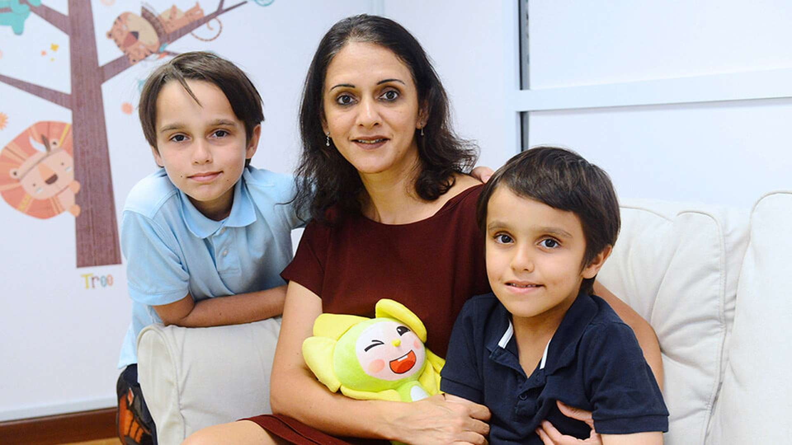

UMBC Infant and Child Language Laboratory
Home
Parent Resources
Publications
Our Team
Parent Resources

Helpful Resources for Parents of Infants and Young Children:
CDC – Positive Parenting Tips for Infants (0–12 months)
Zero to Three – Early Development Resources
Vox – Explainer on Childcare and Its Impact
Parents.com – Memory Formation in Babies:
Babies Can Form Memories
How Dogs Could Help with Eczema
‘Elio’ Review: A Family Adventure
Apple TV+ Encourages Creativity
CoComelon Weekly Watchlist
A Mom’s Zoo Concern
Infant Care and Infant Health Resources
Babies’ Area of Development:
Explore Milestones
Development Through Play
Articles for Families on Behavior and Development (Social & Emotional):
Understanding and Responding to Children Who Bite
Observation: Key to Understanding Your Child
Raising Compassionate Infants and Toddlers
Building Social-Emotional Skills at Home
Raising a Thankful Child
Support Your Child’s Learning
Encouraging Healthy Sleep Habits